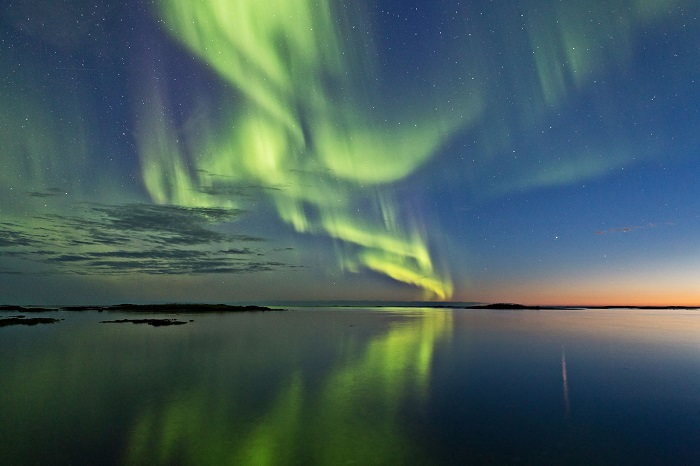
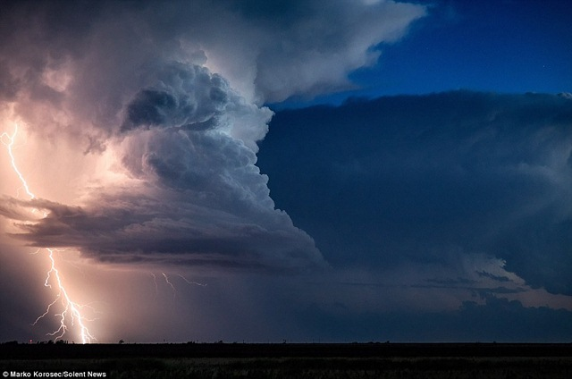
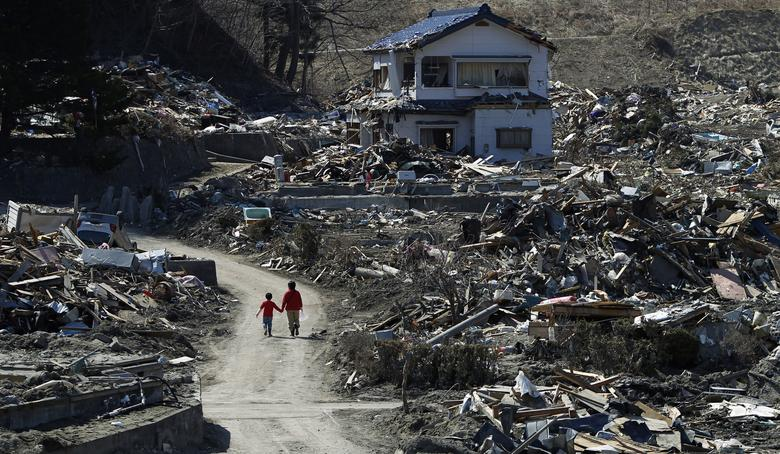

HIỆN TƯỢNG TỰ NHIÊN!
Wow đẹp Thật! Chúng Ta Không Nên Bỏ Lỡ!
 Trong thiên văn học, cực quang là một hiện tượng quang học được đặc trưng bởi sự thể hiện đầy màu sắc của ánh sáng trên bầu trời về đêm,được sinh ra do sự tương tác của các hạt mang điện tích từ gió mặt trời với tầng khí quyển bên trên của hành tinh.
Các cực quang mạnh nhất thường diễn ra sau sự phun trào ánh sáng của Mặt Trời.
Những dải sáng này liên tục chuyển động và thay đổi làm cho chúng trông giống như những dải lụa đầy màu sắc màu trên bầu trời.
Đây có thể coi là một trong những hình ảnh đẹp của tự nhiên.
 Sấm hay sấm sét là âm thanh gây ra bởi tia sét và là một hiện tượng thiên nhiên.
Tùy thuộc vào khoảng cách và bản chất của những tia chớp, âm thanh sấm nghe được có thể dạng thanh ngắn hoặc tràng âm trầm lớn kéo dài hoặc ngắn.
Sự tăng đột ngột của áp suất và nhiệt độ từ sét gây ra sự giãn nở tức thì trong không khí, và sự giãn nở này tạo ra một sóng xung kích âm thanh, chính là hiện tượng thường được gọi là "tiếng sét" hay "tiếng sấm rền".
Âm thanh tiếng sấm đến nơi người quan sát sau ánh sáng của tia chớp lóe lên.
Ngành khoa học nghiên cứu về sấm được gọi là brontology.
 Núi lửa là một vết đứt gãy trên lớp vỏ của một hành tinh, như là Trái Đất cho phép dung nham, tro núi lửa, và khí thoát ra từ một lò magma ở dưới bề mặt.
Núi lửa là một vết đứt gãy trên lớp vỏ của một hành tinh, như là Trái Đất cho phép dung nham, tro núi lửa, và khí thoát ra từ một lò magma ở dưới bề mặt. Núi lửa phun trào có thể tạo nên nhiều mối nguy hiểm, không chỉ trong khu vực lân cận của vụ phun trào.
Một mối đe dọa là tro núi lửa, ảnh hưởng xấu đến máy bay, đặc biệt là những loại có động cơ phản lực, có thể làm nóng chảy những hạt tro, sau đó tro nóng chảy sẽ dính vào cánh tua bin và thay đổi hình dạng, làm hỏng tua bin.
Những vụ phun trào lớn có thể thay đổi nhiệt độ bởi tro và những giọt axit sulfuric che mờ mặt trời và làm tầng khí quyển thấp (tầng đối lưu);
tuy nhiên, chúng cũng hấp thụ nhiệt lượng tỏa ra từ Trái Đất, làm ấm lớp khí quyển cao hơn (tầng bình lưu).
Trong quá khứ, mùa đông núi lửa đã gây ra những nạn đói trên diện rộng.
 Động đất hay Địa chấn là sự rung chuyển trên bề mặt Trái Đất do kết quả của sự giải phóng năng lượng bất ngờ ở lớp vỏ Trái Đất và phát sinh ra sóng địa chấn
Hoạt động địa chấn của một khu vực là tần suất, loại và kích thước của trận động đất trải qua trong một khoảng thời gian.
Từ chấn động cũng được sử dụng cho rung động địa chấn nhưng không gây ra động đất.
Nó cũng xảy ra ở các hành tinh,vệ tinh có cấu tạo với lớp vỏ ngoài rắn như Trái Đất.